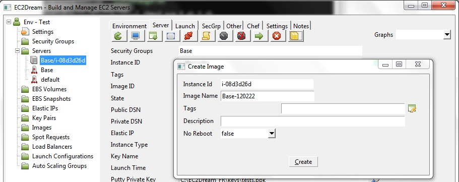
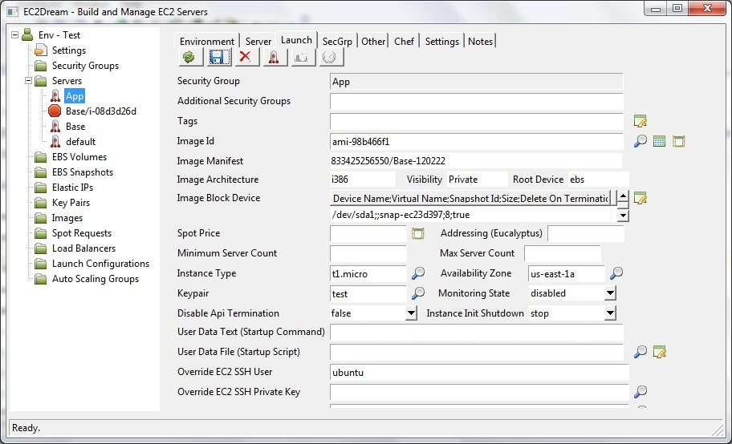

Build a Server with Chef Solo or Puppet Apply
Core Concepts
Chef Cookbook
Cookbooks are the configuration definitions used by Chef. Cookbooks contain Attributes, Definitions, File Distribution, Libraries, Recipes, Resources and Templates that are rendered on Chef-configured machines with your dynamically substituted values. Think config files on steroids.Machine Image
A Machine Image contains all the information necessary to boot instances of your software. It is somewhat analogous to a snapshot of the boot partition containing the operating system and installed software running on your server.Amazon has two types of images:
a. Elastic Block Storage (EBS) based instances store Amazon Machine Images (AMI) as a EBS snapshot.
b. Instance instances store AMI as an encrypted file stored in Amazon S3.
In this approach a server is built without reference to a Chef Server or Puppet Master. Chef Solo or Puppet apply is used to build the servers and then an image is made of the server to use in the future.
This is good for:
-a small number of servers, say up to 50,
-a very large number of servers that would overwhelm a chef server or puppet master (over 500?)
-or if your server needs to start quicklyas part of an autoscaling group.
It is also a good approach for developing and testing cookbooks or manifests even if later a chef server or puppet master is used to configure the servers in production.
Build a Server running a webserver
1. Set the Chef or Puppet Repository location in the EC2Dream Fogviz Environments panel.In the Chef Repository there is a base cookbook in the cookbooks directory. Add any additional requirements for all servers to the base cookbook. A sample cloud_init script can be used to pass parameters in the user data as an alternative to running chef or puppet at start up and pass a chef node.json file.
2. If you are using an elastic ip add to the chef recipe
add to the attributes in the cookbook:
default[:base][:ip_address] = "999.999.999.999"
3. If you are using a separate volume specify in the user data:add to the attributes in the chef cookbook:
default[:base][:volume] = vol-xxxxxx"
default[:base][:device] = "/dev/sdf"
4. If you are using a Windows Server download the iis cookbook from http://community.opscode.com/cookbooks/iis and unzip into the chef repository cookbook folder. Configure the attributes and use iis instead of app in the following steps.
5. If you are using puppet make sure that Puppet Version 3 is available from the repositories
For ubuntu version 12
wget http://apt.puppetlabs.com/puppetlabs-release-precise.deb
sudo dpkg -i puppetlabs-release-precise.deb
For 64 bit Centos or Redhat
rpm -ivh http://yum.puppetlabs.com/el/6/products/x86_64/puppetlabs-release-6-7.noarch.rpm
5. Go to the Server panel for the running the Base server started earlier:To use chef change the Chef Node to app and press on the Chef button
To use puppet change the Puppet Manifest to test.pp and press on the Puppet button
This will run in a separate window and should finish with a message saying succesfully applied.

6. The Chef or Puppet run will have installed apache so to test go into a browser and run http://ec2-99-99-999-999.compute-1.amazonaws.com using the Public DSN from the server panel
For ubuntu servers you will see an initial server like:

and for Centos:

7. Create an Image of the Server
Create an Image by pressing on the Create Image button

NOTE: Amazon Instance Store Images
-Configure an run the bundle.rb script on the server
-Register the image by pressing the Create Image button
8. Shutdown the server by pressing the Terminate button
and update the base launch profile with the new image.

9. You might like to test the new base image by launching it and proving it starts up
Create Launch Profile and launch the server from the image
1. Create a Security Group for the server called App.
NOTE: Skip creating a security as Rackspace currently does not support security groups. use the default group in EC2Dream.
2. Create a launch profile for App with an Image id created earlier.

To do more processing at startup (for example to deploy your html pages) specify in the User Data the cookbook to run at startup:
chef:
#!/bin/bash
#Chef run list
cat << "EOF" > /etc/chef/node.json
{
"run_list": ["role[app]"]
}
EOF
sudo chef-solo -c /etc/chef/solo.rb -j /etc/chef/node.json -l debug > /home/ubuntu/startup.log && echo "Server ready." | wall
puppet:
#!/bin/bash
puppet apply -v -d --modulepath /var/local/pocketknife/modules /var/local/pocketknife/manifests/app.pp
NOTE: An extra enhancement could be to add a step to checkout the latest copy of the chef or puppet repository from a source control system like git.
mv /var/local/pocketknife /var/local/pocketknife.orig
git clone $repo_source /var/local/pocketknife
This is the best way to scale out to a large number of servers without hitting limits imposed by a chef server or puppet master. User data can also by specifed in a autoscaling group configuration.See Scaling Puppet with Git and Bootstrapping Instances with cloud-init, git, and puppet
Other applications
For some popular applications follow the following instructions to install from their cookbooks :For Alfresco see Install Alfresco
For Magento see Install Magento
For OpenBravo see Install OpenBravo. Currently no cookbook so install from script.
For SugarCRM see Install SugarCRM